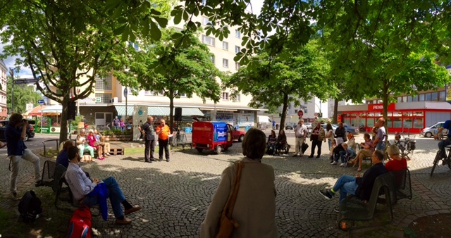
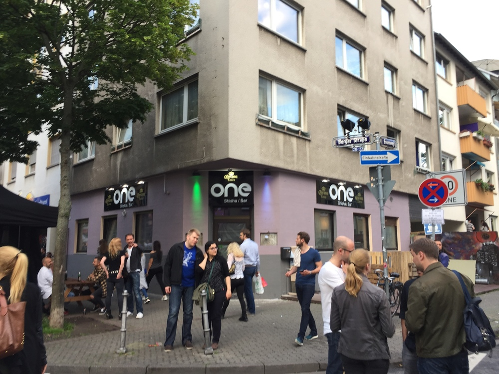
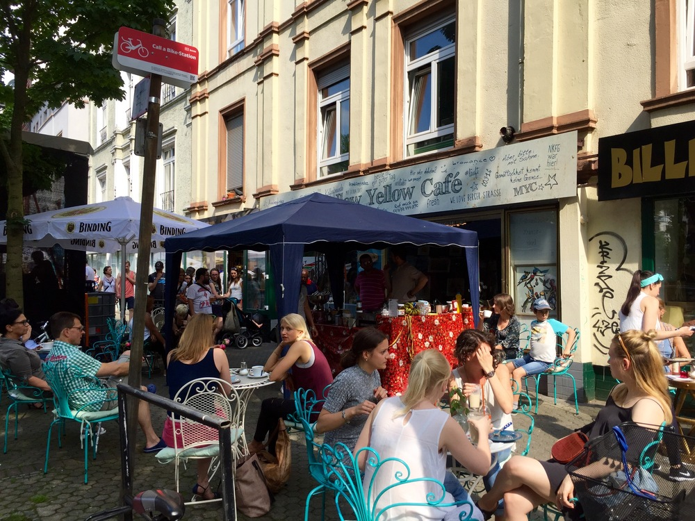

Anlässlich des nunmehr 31. Berger Straßenfestes zwischen Höhenstraße und Bethmannpark habe ich mich einmal wieder ein wenig näher auf der Berger Straße umgeschaut. Schnelllebiger ist schließlich wohl keine andere Frankfurter Meile, und viele Läden überdauern (leider) kaum ihre Eröffnung.
Andererseits gibt es auch bei alteingesessenen Institutionen der "Berger" immer einige Änderungen zu vermelden - die Schließung des "Saturn" sowie die Umgestaltung des "Wollworth"-Gebäudes samt anschließender Neueröffnung sind hierfür nur das jüngste Beispiel.
Am vergangenen Wochenende habe ich mich nun wieder einmal ein wenig genauer auf der "Berger" Umgeschaut. Anlass war das Berger Straßenfest, und, nun ja: Die Frankfurter Rundschau hat hierüber - wenn auch ein wenig übertrieben - gesagt, was es hierzu zu sagen gibt:
*Den Anwohnern präsentieren sich dabei immer wieder neue, interessante Facetten ihres Wohnumfeldes: Besoffene grölen bis in die frühen Morgenstunden, geben sich leidenschaftlich der alten Tradition des Schellekloppens hin und erleichtern sich gerne auch mal in die Blumenrabatten. „Immerhin gut für die Landwirtschaft“, denkt sich der Berger-Straßen-Bewohner dann, lächelt leise in sich hinein und freut sich, dass er nicht am Friedberger Platz wohnt, wo sich diese Szenen freitäglich abspielen.
Allerdings bietet das Berger Straßenfest am Samstag und Sonntag auch so mancherlei, das man am Friedberger Platz vergebens sucht. Diesmal etwa die hessische Rudermeisterin Allegra Nemati, die am Merianplatz sich und ihr Ruderboot präsentiert. Das allerdings würde man sich eher mal am Friedberger Platz wünschen, von wo aus jeden Freitagabend ein von Menschen gespeister Wildbach den Bäckerweg hinuntermäandert. Ansonsten aber alles wie am Friedberger Platz: sehr laut, sehr voll, sehr viele junge Männer mit Vollbart und Dutt. Aber halt nur einmal im Jahr und darum viel besser. (skb)
(Quelle: Frankfurter Rundschau, Ausgabe vom 03. Juni 2016)*
Nun ist es freilich nicht ganz so dramatisch; im Gegenteil: Es ist schön, dass mit dem Fest ein Anlass geschaffen wird, sich einmal wieder nachbarschaftlich auszutauschen und die eigene Wohngegend zu erkunden.
Allerdings, viel Spannendes erfährt der Nordendler/Bornheimer nicht:
Auf der Berger kann man ganz, ganz vielseitig essen, absolut fancy Getränke schlürfen, kostengünstig ins Ausland telefonieren, Sport treiben - und natürlich Sneaker kaufen, die man anschließend stolz den Freunden im "Hoppenworth & Ploch", beim gemeinsamen Sonnenbad am Matthias-Beltz-Platz oder im eigenen Fashion-Blog oder auf Instagram präsentieren kann.
Ein wenig mehr Kultur sowie Geschäfte abseits der Gastronomie, Rossmann & Co. wären für ein wahrhaft urbanes Feeling wohl mehr als förderlich.
Allerdings, wenig beachtet und etwas oberhalb des Berger Straßenfest, konnte ich dann doch noch Erfreuliches leben. Dies sowie weitere Entwicklungen in einem kleinen Überblick:

Wie der Berger Straßen-Blog berichtete, fand am Samstag das erste Bornheimer "Straßen-Quiz" statt. Am Fünffingerplatz konnte sich ein Jedermann den Fragen des Moderators stellen, und bei richtiger Beantwortung Preise gewinnen, die von den ansässigen Geschäften gestiftet wurde.
Veranstalter des Ganzen ist die Stadtteilinitiative "Lust auf Leben". Auch ich konnte die Frage nach der Inschrift des Brunnens vor dem "Irish Pub" im alten Ortskern richtig beantworten und somit ein Buch über das "lustige Dorf" absahnen. Und hey, in die Zeitung hab ich's sogar auch gepackt.
Eine tolle Idee - hoffentlich wird das Quiz in Zukunft regelmäßig durchgeführt!

Ich wollte es erst kaum glauben: Das "o-Ton", bekannt für Strandkorb, vorzügliche Drinks und das nette Personal, hat nach nahezu 15 Jahren schon seit einiger Zeit seine Pforten geschlossen. Grund ist wohl ein ausgelaufener Mietvertrag aufgrund einer Sanierung des Gebäudes. Einzug gehalten in den ehemals so genütlichen Räumlichkeiten hat nun eine Shisha-Bar. Ich hoffe mal, diese kulturelle Anbahnung von der anderen Main-Seite (Stichwort: Alt-Sachenhausen...) bleibt hier Ausnahme.
Ich habe es gepriesen und geliebt: Das Café Cups eröffnete vor einem halben Jahr im Raum des ehemaligen "Extraveganz". Nun ja, alles Daumen drücken sowie der überragend leckere türkische Brunch sowie die herzallerliebste Betreiber-Familie haben nichts geholfen: Rentiert zu haben scheint es sich nicht, und so hat auch das "Café Cups" nunmehr geschlossen. Stühle und Tische sind bereits ausgeräumt; die Familie ist für mich bislang leider "nicht für eine Stellungnahme" zu erreichen. Gerüchteweise eröffnet dort demnächst ein Burger-Laden. Gibt's ja nicht ohnehin schon genügend davon in der Umgebung. Schade drum!
Abschließend noch Erfreuliches:
Das "Yellow Mellow" am unteren Ende der Berger Straßewar bislang ein Café, an dem man schnell vorbei gelaufen ist. Was schade ist, schließlich gibt's dort meiner Meinung gar den besten Cappucino der Stadt und eine mehr als sinnliche Einrichtung. Pünktlich zur "Sommer-Saison" hat sich das Mellow Yellow nun auch einen Namenszug an der Fassade gegönnt und ist durch süße Stühle und Tische dem Kaffee-Liebhaber nun auch von außen deutlich als Kaffeehaus erkennbar.
Direkt gegenüber vom Bethmann-Park lässt sich das Leben dort - versorgt mit frischem Kaffee - nun vorzüglich aushalten. Eine echte Bereicherung für die untere Berger - gerne mehr davon!

Es lohnt sich also weiterhin, der Berger regelmäßig Besuch abzustatten. Langweilig wird's jedenfalls nie!

Ersten Kommentar schreiben